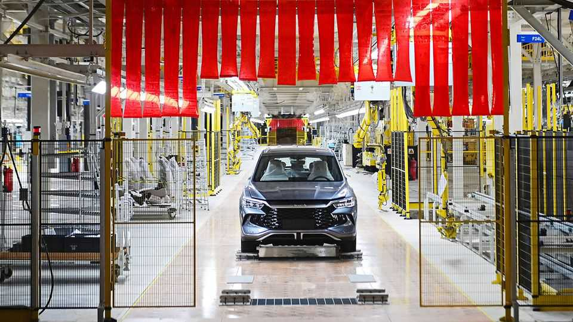
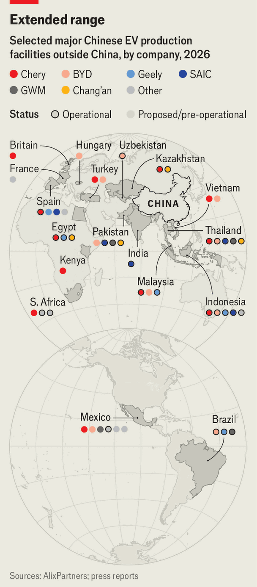

Chinese carmakers are bringing their factories to the world
Incumbents will have to accelerate to compete

Sep 10th 2026
When Ford opened the industry’s first big overseas outpost, in Manchester in 1911, it set the route by which ambitious carmakers went from dominating at home to spanning the globe. Over a century later, with Ford in retreat, it is the Chinese who are setting up factories abroad. They will not be able to bring all of their advantages with them. But many will travel—to the dismay of incumbents.

China’s mighty carmakers, which pump out around a quarter of the world’s cars, have competitors on the run everywhere. The situation is intensified by a home market forecast to shrink 10% this year, with the resulting price war encouraging overseas sales. In five years foreign firms’ share of the Chinese market has roughly halved, while exports from the country, of which local brands make up four-fifths, have risen seven-fold. In 2026 exports could hit 10m vehicles, over 40% more than last year, according to AlixPartners, a consultancy.
Even so, just as in Ford’s day, there are plenty of reasons to manufacture closer to foreign customers, starting with tariffs and the expense of shipping vehicles. A presence on the ground also helps with spotting and adapting cars to local tastes and conforming with local regulations. And governments may dangle subsidies and other inducements to attract factories and manufacturing jobs.
China’s firms are already assembling cars, or have plans to do so, across much of the developing world (see map). But it is the vast European market they regard as their biggest prize. If tariffs imposed by the EU in 2024 have hurt Chinese vehicle imports, it hardly shows. Schmidt Automotive Research, a data provider, calculates that Chinese carmakers captured 11% of sales in western Europe in the second quarter of this year, overtaking their Japanese rivals. Tougher deterrents are in the works, however. The EU’s proposed Industrial Accelerator Act, which is currently weaving its way through the bloc’s tortuous policymaking process, would tie the availability of purchase subsidies and tax breaks for corporate fleets to vehicles that meet certain local-content thresholds, alongside other measures favouring production within the region.
These rules may not be in place for a year or more, and could yet be watered down. Nonetheless, the Chinese are hurriedly updating their plans. Consider BYD, the biggest of the lot, which is close to opening a plant in Hungary that may eventually churn out 300,000 cars a year. It has put on hold another new factory in Turkey intended to serve the European market, as it searches for a pre-existing site in Spain or France. A brand new factory takes around three years to get up and running; acquiring and retrofitting an existing plant is quicker and cheaper. The number available is sure to increase in the years ahead: on September 3rd Volkswagen gained approval from its supervisory board for a restructuring that will involve phasing out production at four sites in Germany.
An even swifter approach is to take over part of a factory that is under-used. AlixPartners reckons there is spare capacity to make 2.5m cars a year across European factories. A deal Chery signed in June with Nissan to use part of its Sunderland factory in Britain, and a similar one in July allowing Geely to build evs at a Ford plant in Valencia, may be just the start.
Still, such deals are a temporary measure to speed market entry, says Pedro Pacheco of Gartner, another consultancy, and the next stage will be independent production. Indeed, SAIC recently confirmed plans for a new factory in Spain, while Xpeng is said to be searching for a permanent European base.
European car bosses may hope that the cost advantage of around 30% that their Chinese rivals currently enjoy will be eroded by localised production. But they are bound to be disappointed. China’s edge comes from a combination of lean corporate structures, streamlined manufacturing and a high degree of vertical integration, with economies of scale compounding the benefits over time. Chinese cars typically contain around 1,000-2,000 different parts, whereas European competitors are still wrangling 3,000-10,000, notes Fabian Brandt of Oliver Wyman, another consultancy. China has also mastered the “software-defined vehicle”, based around a central computer that controls all functions, rather than the dozens of micro-controllers used by Western incumbents, says Andrew Bergbaum of AlixPartners.
All this lowers costs. It also makes the Chinese much quicker at developing new cars, which typically takes them around two years, compared with at least double that for foreign competitors—a trait the industry has come to refer to as “China speed”. Much of their advantage will persist as production moves abroad. Research and development will remain in China, and the manufacturing methods perfected at home will be replicated globally.
Chinese carmakers will not be able to escape some new costs. Establishing a retail and after-sales network in 30 or so markets adds expense and complexity. And while some of their cheap suppliers have also set up in Europe, they will still have to use many of the same vendors that their local competitors do, particularly if policymakers in Brussels get their way.
Then there are labour and energy costs. These are the same whether a factory is owned by a European carmaker or a Chinese one. But whereas European firms’ footprints are largely fixed, Chinese firms can be choosy, opting to manufacture in cheaper countries such as Hungary or Slovakia, rather than, say, Germany. Mr Pacheco reckons that costs in eastern Europe’s carmaking centres are not quite as low as in China, but are not far off.
Moreover, local labour costs may soon matter less. In China carmakers are working on “dark factories”, so automated that the absence of human workers means that lighting is not required. Once a dark factory is ready the Chinese will “just pack it, ship it over and unpack it,” reckons Daniel Hirsch, also of Oliver Wyman.
The pace at which China is expanding abroad makes forecasting difficult. AlixPartners reckons that its firms will have the capacity to make 3.4m cars overseas by 2030, up from 1.2m last year. Others put the figure as high as 6m. According to Mobility Global, an information provider, Chinese brands will manufacture 90,000 cars in Europe this year, accelerating to as many as 1m by 2030. What is certain is that China speed will not slow soon. ■